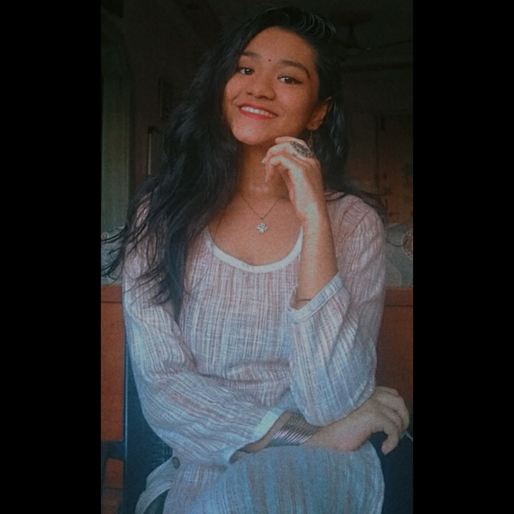
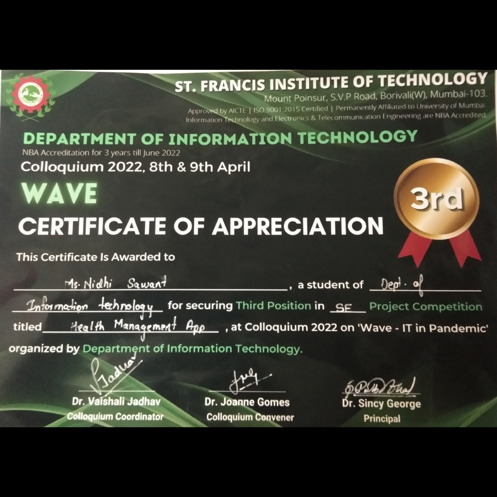

" Life isn’t about finding yourself. Life is about creating yourself "- George Bernhard Shaw

Nidhi Sawant
Address: Shree Ganesh Gaurav, Kandivali(west),Mumbai-400067
Phone no.: 9847403769
Gmail:sawantnidhi2020@gmail.com
Education Qualification
| Sr No. |
Education |
School/Collge |
Year of passing |
|---|
| 1 |
SSC |
Swami Vivekanand International School & Jr.College |
2018 |
| 2 |
HSC |
MJ Junior College of Science |
2020 |
3 |
BE-Information Technology (FE) |
St.Francis Institute of Technology |
2021 |
| 4 |
BE-Information Technology (SE) |
St.Francis Institute of Technology |
2022 |
Skills
Technical Skills:
Non-Technical Skills:
- Organization
- Time Management
- Critical Thinking
- Adaptability
Internships
- Documentation Executive- ITSA
- Documentation Representative- Colloquium 2022
- Committee Representative- Fusion of DevOps and Advance DevOps Tools
Personal Hobbies
- Learning new danceforms like Indian Classical(Bharatnatyam), Bollywood Freestyle.
- Preparing and trying out Authentic Delicacies.
Social Responsibility Activities
- Being a part of Committee (ITSA) for welfare of the IT students on college level.
Certification and Achievements
Certification for Securing 3rd place in Colloquium Wave 2022

Refrences
Visit my Linkedin profile for more details